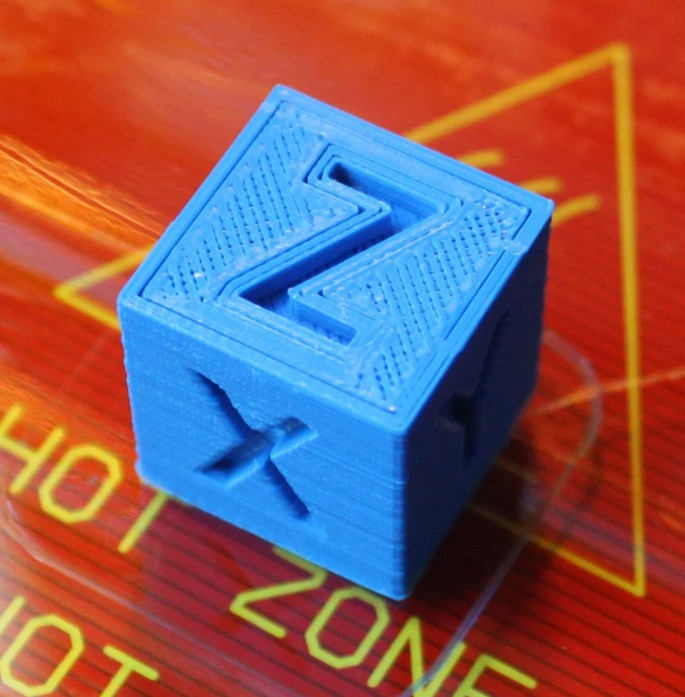

Fabricación de piezas plásticas
Step 1: Configura tu impresora 3D
Todas las piezas plásticas de la bomba de jeringa pueden ser impresas con impresoras 3D, estilo Rep-Rap, y con filamento PLA.
Para la fabricación de piezas, te recomendamos configurar tu impresora con los siguientes parámetros:
| Parámetro | Valor |
|---|---|
| Material | PLA |
| Material Temperature | Recommended by the PLA brand |
| Layer height | 0.2mm or less |
| Infill | Printer default or more |
| Brim | Recommended for all parts |
| Slice gap closing radius | 0.001mm |
Para comprobar la calibración de tu impresora, descarga este cubo e imprímelo:
Una vez impreso, compara las dimensiones del cubo y las letras respecto a las dimensiones en el software de diseño:

Step 2: Impresión 3D de piezas
Ahora que verificaste el funcionamiento de tu impresora 3D con el filamento PLA, puedes imprimir las piezas de la bomba de jeringa:
- Back support - A: back-support-A.stl
- Back support - B: back-support-B.stl
- Carriage: carriage.stl
- Front support: front-support.stl
- Syringe holder: syringe-holders.stl
- Hand knob: hand-knob.stl
Step 3: Limpieza de piezas
Warning
Ten cuidado al remover los excesos: Para evitar accidentes, primero remueve los excesos sin objetos punzocortantes. Luego, retira el remanente utilizando la técnica descrita abajo.
Cuidadosamente remueve los excesos de impresión de todas las piezas plásticas:
-
Utiliza un alicate de corte diagonal para remover la mayoría de excesos de impresión de cada parte.
-
Limpia los remanentes de impresión con un cuchillo de hoja rectráctil:
- Sosten el cuchillo en tu mano dominante con tus cuatro dedos alrededor del mango, dejando libre tu pulgar.
- Sosten la pieza plástica en tu otra mano, en la zona más alejada posible de las superficies a ser cortadas.
- Apoya la pieza plástica en el pulgar de tu mano dominante.
- Coloca la hoja del cuchillo en la superficie que será cortada, y cuidadosamente cierra tu mano dominante, moviendo la hoja, con control, hacia tu pulgar.